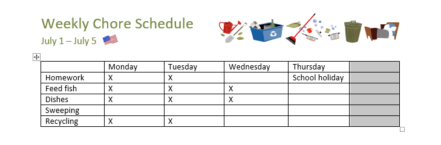
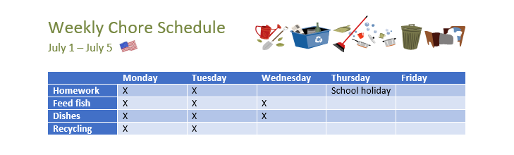

Introducere
Un tabel este o grilă de celule aranjate în rânduri și coloane. Tabelele pot fi folosite pentru a organiza orice tip de conținut, indiferent dacă lucrați cu text sau date numerice. În Word, puteți insera rapid un tabel gol sau puteți converti textul existent într-un tabel. De asemenea, vă puteți personaliza masa folosind diferite stiluri și machete.
Pentru a introduce un tabel gol:- Plasați punctul de inserare acolo unde doriți să apară tabelul.
- Navigați la fila Inserare , apoi faceți clic pe comanda Tabel.
- Aceasta va deschide un meniu derulant care conține o grilă. Plasați cursorul peste grilă pentru a selecta numărul de coloane și rânduri dorite.
- Faceți clic pe grilă pentru a confirma selecția și va apărea un tabel.
- Pentru a introduce text, plasați punctul de inserare înorice celulă, apoi începeți să tastați.
În exemplul de mai jos, fiecare rând de text conține o parte dintr-o listă de verificare, inclusiv treburile și zilele săptămânii. Elementele sunt separate prin file. Word poate converti aceste informații într-un tabel, folosind filele pentru a separa datele în coloane.
- Selectați textul pe care doriți să îl convertiți într-un tabel. Dacă utilizați fișierul nostru de practică, puteți găsi acest text pe pagina 2 a documentului.
- Accesați fila Inserare, apoi faceți clic pe comanda Tabel.
- Selectați Conversie text în tabel din meniul drop-down.
- Va apărea o casetă de dialog. Alegeți una dintre opțiunile de sub Separare text la. Acesta este modul în care Word știe ce să pună în fiecare coloană.
- Faceți clic pe OK . Textul va apărea într-un tabel.
Puteți schimba cu ușurință aspectul tabelului după ce ați adăugat unul în document. Există mai multe opțiuni de personalizare, inclusiv adăugarea de rânduri sau coloane și schimbarea stilului tabelului.
Pentru a adăuga un rând sau o coloană:- Plasați cursorul în afara tabelului unde doriți să adăugați un rând sau o coloană. Faceți clic pe semnul plus care apare.
- Un nou rând sau coloană va fi adăugată la tabel.

- Plasați punctul de inserare în rândul sau coloana pe care doriți să o ștergeți.
- Faceți clic dreapta, apoi selectați Delete Cells din meniu.
- Va apărea o casetă de dialog. Alegeți Ștergeți întreg rândul sau Ștergeți întreaga coloană , apoi faceți clic pe OK.
- Rândul sau coloana vor fi șterse.
Stilurile de masă vă permit să schimbați instantaneu aspectul mesei. Ei controlează mai multe elemente de design, inclusiv culoarea, chenurile și fonturile.
- Faceți clic oriunde în tabel pentru al selecta, apoi faceți clic pe fila Design din extrema dreaptă a Panglicii.
- Găsiți grupul Stiluri de tabel, apoi faceți clic pe săgeata derulantă Mai multe pentru a vedea lista completă de stiluri.
- Selectați stilul de tabel dorit.
- Va apărea stilul tabelului.



După ce ați ales un stil de masă, puteți activa sau dezactiva diverse opțiuni pentru a-i schimba aspectul. Există șase opțiuni: Rând antet, Rând total, Rânduri cu bandă, Prima coloană, Ultima coloană și Coloane cu bandă.
- Faceți clic oriunde în tabel, apoi navigați la fila Design.
- Localizați grupul Opțiuni stil tabel, apoi bifați sau debifați opțiunile dorite.
- Stilul tabelului va fi modificat.
- Selectați celulele cărora doriți să le aplicați un chenar.
- Utilizați comenzile din fila Design pentru a alege stilul de linie, grosimea liniei și culoarea creionului dorite.
- Faceți clic pe săgeata drop-down de sub comanda Borders.
- Alegeți un tip de chenar din meniu.
- Chenarul va fi aplicat celulelor selectate.